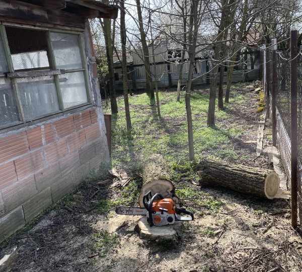
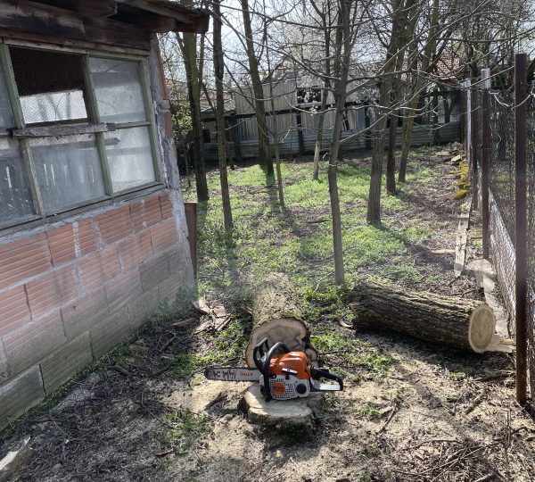

Bozótirtás
Professzionális bozótirtási szolgáltatások. Eltávolítjuk a nem kívánt bozótot és vadon növő növényeket, hogy kertje rendezett és ápolt legyen.
- Teljes bozóteltávolítás
- Vadon növő növények irtása
- Tereprendezés bozótirtás után
- Környezetbarát módszerek
Fűnyírás / Fűvágás / Magasgaz vágása
Rendszeres fűnyírás és magasgaz vágás szolgáltatások. Gondoskodunk arról, hogy gyepje mindig rendezett és egészséges legyen.
- Rendszeres fűnyírás
- Magasgaz és vadnövények vágása
- Gyepszegély kialakítása
- Szezonális karbantartás
Füvesítés
Professzionális füvesítési szolgáltatások. Új gyep kialakítása magvetéssel vagy gyepszőnyeg fektetéssel, talajelőkészítéssel.
- Talajelőkészítés füvesítéshez
- Magvetés és gyepszőnyeg fektetés
- Öntözőrendszer kialakítása
- Utógondozás és tanácsadás
Fahasítás – kuglizás
Tűzifa előkészítése hasítással és kuglizással. Különböző méretekben, használatra kész állapotban biztosítjuk a tűzifát.
- Tűzifa hasítás különböző méretekben
- Kuglizás és darabolás
- Szárításra előkészítés
- Helyszíni vagy telephelyi munka
 

Fakivágás
Biztonságos fakivágási szolgáltatások. Veszélyes, beteg vagy nem kívánt fák eltávolítása szakszerűen és biztonságosan.
- Veszélyes fák biztonságos kivágása
- Beteg fák eltávolítása
- Tuskó eltávolítás
- Szakképzett favágók
Sövénynyírás
Professzionális sövénynyírási szolgáltatások. Sövények formázása, alakítása és rendszeres karbantartása minden évszakban.
- Sövények szakszerű nyírása
- Formázás és alakítás
- Rendszeres karbantartás
- Különböző sövénytípusok kezelése
Rotálás
Talaj rotálása és lazítása professzionális gépekkel. Felkészítjük a talajt ültetésre és javítjuk annak szerkezetét.
- Talaj rotálása és lazítása
- Talajelőkészítés ültetésre
- Talajszerkezet javítása
- Professzionális rotálógépek

Egyéb kerti munkák
Minden egyéb kerti munka, amit kertje szépségéért és karbantartásáért tehetünk. Ásás, metszés, takarítás és tereprendezés.
- Ásás és földmunkák
- Növények metszése
- Kerti takarítás
- Tereprendezés és kialakítás